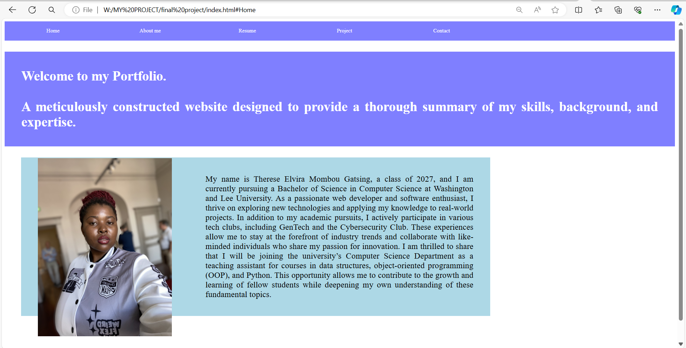

A meticulously constructed website designed to provide a thorough summary of my skills, background, and expertise.
Background
As a Cameroonian native with a strong interest in computer science, I've been immersed in the world of technology since I was very young. My path in technology began with my brother's support, who also majored in computer science, creating a collaborative environment of creativity and discovery.
At the Microsoft Office Championship, my proficiency in Word 2019, Excel 2019, and PowerPoint 2019 was acknowledged, awarding me a specialist certification and confirming my technical proficiency.
The NASA EED Mentoring Program provides participants with extensive interview preparation, networking opportunities, and competitive internship training. This experience is helping me improve my professional skills and broaden my understanding of the aerospace sector.
In addition to my technical ambitions, I am an active member of Girls Who Code and Rewriting the Code, where I am dedicated to lifelong learning and networking. These communities have been crucial to my development, providing opportunities to learn new skills and connect with like-minded people.
This year, I accepted the post of Storage Scholar Brand Ambassador, which tested my communication and marketing abilities. Through this venture, I have developed my capacity to engage audiences and communicate effectively, relying on my teamwork skills to achieve success.
Education
I completed my secondary education at Government Bilingual High School Dschang, located in the western region of Cameroon. During my twelfth grade, I served as the President of the Computer Science Club, where I organized workshops focused on Microsoft Office applications. These workshops aimed to enhance the computer literacy of underclassmen.
Currently, I am a full-time student at Washington and Lee University, pursuing a Bachelor of Science degree in Computer Science. Beyond my technical pursuits, I am actively engaged in the African Society Club and the Gaming Club, which enriches my collegiate experience.
Skills
Programming Languages & Technologies
Python
Advanced proficiency in Python, with a strong grasp of both fundamental and advanced concepts, including object-oriented programming (OOP) and data structures
C++
Proficienct in C++, with a focus on object-oriented design.
Familiar with memory management, performance optimization and low-level programming.
HTML and CSS
Skilled in creating well-structured and styled web pages using HTML5 and CSS3, ensuring responsiveness and cross-browser compatibility.
JavaScript
Competent in utilizing JavaScript to enhance user interfaces and improve the interactivity of web applications.
Office Specialist Proficiency
Microsoft Word 2019
Accomplished in creating, formatting, and editing documents, including advanced features like styles, templates, and mail merge.
Microsoft Excel 2019
Proficient in data analysis, formula creation, pivot tables, and charting, enabling efficient decision-making.
Microsoft PowerPoint 2019
Skilled at designing impactful presentations, incorporating animations, transitions, and multimedia elements
Soft Skills
Teamwork
Communication
Problem Solving
My Professional Resume
Below is my current resume, showcasing my skills, projects, and qualifications. Please feel free to scroll through the document and
Portfolio Description
This portfolio showcases my journey as a web developer, highlighting my skills, projects, and experiences. It serves as a comprehensive summary of my abilities and professional background. The design and structure of the portfolio were meticulously planned to provide an engaging and user-friendly experience.

My Role
As the sole creator of this portfolio, I was responsible for every aspect of its development, from the initial design and layout to the final implementation and deployment. This involved writing the HTML, CSS, and JavaScript code, as well as handling the graphical design elements.
Technologies Used
HTML
For the structure and content of the webpages.
CSS
For styling and layout, ensuring a visually appealing design.
JavaScript
For interactive elements and dynamic content.
GitHub
For version control and hosting the portfolio online.
Challenges Faced & Solutions
Challenge 1: Making the Webpage Responsive
Problem: The initial design of the webpage was static and didn’t adapt well to different screen sizes, leading to a poor user experience on mobile devices and tablets.
Solution: To address this, I implemented a responsive design by:
Adding a meta tag to ensure proper scaling on all devices.
Using relative units like percentages and flexible layouts for better adaptability.
Employing media queries to apply different CSS styles based on the screen size, ensuring a seamless experience across all devices.
Challenge 2: Converting File URIs to HTTP Links
Problem: Local file URIs were not accessible when the website went live, which caused broken links and missing resources.
Solution: I utilized GitHub to host the files and converted the local file URIs to HTTP links. This not only fixed the resource access issue but also streamlined the deployment process for future updates.
Project title: User Management System
Description: Developed a robust console-based application in C++ that manages user registrations, logins, and stores user credentials securely using file handling techniques.
Implemented object-oriented principles to ensure modularity and scalability.
Key Skills Demonstrated
Programming Languages
Proficient in C++ with a focus on object-oriented design.
Software Development
Implemented file handling for persistent storage, user input handling, and error management.
Security Principles
Addressed password security and storage considerations within the application design.
Challenges Faced & Solutions
I: File Handling and Data Persistence
Challenge: Ensuring that user data is consistently saved and loaded from a file to maintain data persistence across sessions.
Solution: Implemented robust file I/O operations using ifstream and ofstream to read from and write to a file.
Created a structured format to store user data, allowing for easy parsing and error checking during file operations.
II: Providing Access
Challenge: Limited accessibility for users who need to download and compile the application locally.